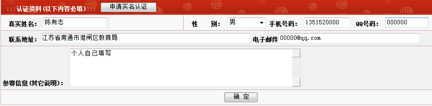
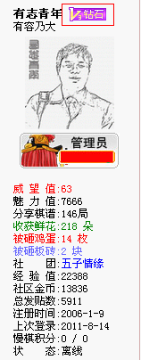

关于实名认证的FAQ
#1 关于实名认证的FAQ作者：小丸.net 发表时间：2011-8-14 17:27:36
1.为什么要实名认证？
答：是为了更好的为实战棋手服务，为以后提供更优质的服务
2.实名认证需要什么资格？
答：参加过省级、市级以上比赛的实战型棋手均可认证。各地区及网络五子棋推广者且取得一定成绩，有一定影响力的亦可参加。
3.实名认证需要什么资料？
实名认证需要填写实名资料，真实姓名，性别，手机号，地址（省，市，区即可），电子邮件，QQ，以及参加过比赛信息。
4.实名认证有什么好处？
答：实名认证用户每月均可以获得棋谱、金币、威望等奖励。
5.怎么样进行实名认证？
答：
控制面板，修改个人信息中，填写真实姓名、性别、联系电话、联系地址、以往参赛信息或相关信息、qq号码。
以上信息填写后仅管理员后台可见。

A、先填写个人认证的相关信息
B、点击下方的“确认”按钮（这里要注意一定要在资料填写完毕后先点“确定”，跳转后再进行下一步）
C、再次进入，点击“申请实名认证”按钮
6.需要多少时间可以获得认证通过？
答：如果您填写资料准确无误、完整，24小时内可以通过认证。
7.为什么我申请了认证没有通过？
答：因为您的资料不完整，我们无法验证您的资料。
8.我填写了实名资料，我的信息会泄露吗？
答：您完全可以放心，您的资料只有管理员可见，任何网站会员均无法获得您的信息。
9.怎么看我是实名认证用户？
答：在贴子左侧，个人信息栏中，有一个蓝色钻石的图标，如果您有蓝色钻石图标，说明您已经通过了认证。

10.实名认证用户不能变更资料，怎么办？
答：如果您需要更新您的资料，请联系任何一位管理员，管理员可以协助您进行资料变更。
邮箱在密码修改处修改
［ 逆刃 于 2011-8-14 17:31:26 时花20金币送鲜花一朵］
［此帖子已被 有志青年 在 2011-8-14 20:12:20 编辑过］
［此帖子已被 有志青年 在 2011-8-16 12:16:46 编辑过］
［此帖子已被 有志青年 在 2011-8-18 15:17:41 编辑过］
［此帖子已被 被感动的人 在 2011-8-22 14:25:39 编辑过］
#2 Re:关于实名认证的FAQ作者：星月思过 发表时间：2011-8-14 17:41:56
9.怎么看我是实名认证用户？
答：在贴子左侧，个人信息栏中，有一个蓝色钻石的图标，如果您有蓝色钻石图标，说明您已经通过了认证。
我怎么看到的是紫色。。。我色盲吗？
#3 Re:关于实名认证的FAQ作者：裁决殿雪月 发表时间：2011-8-14 18:18:19
是紫色
#4 Re:关于实名认证的FAQ作者：忧郁的双眼 发表时间：2011-8-14 18:20:50
我昨天认证了啊 怎么到现在还没钻石？#5 Re:关于实名认证的FAQ作者：忧郁的双眼 发表时间：2011-8-14 18:21:11
有了，哦呵呵~~~#6 Re:关于实名认证的FAQ作者：隔世的风 发表时间：2011-8-14 19:15:05
恭喜、恭喜，恭喜各位跻身贵族之列！#7 Re:关于实名认证的FAQ作者：三国老凯 发表时间：2011-8-14 19:21:32
祝贺楼上出狱~~~~~~~~
#8 Re:关于实名认证的FAQ作者：岑小鱼 发表时间：2011-8-14 19:31:28
我还以为是人人都可以参与的.......
#9 Re:Re:关于实名认证的FAQ作者：隔世的风 发表时间：2011-8-14 19:32:30
引用：我无所谓，人格被侮辱的又不止我一个。这个网站号称6万余注册者，就算每人有3个ID，那也应当有2万人。而冠以贵族称号的人应当不会超过500人，2万减去5百。 人格被侮辱的还占多数的
原文由 三国老凯 发表于 2011-8-14 19:21:32
祝贺楼上出狱~~~~~~~~
#10 Re:关于实名认证的FAQ作者：掌棋宣传员 发表时间：2011-8-14 20:22:37
回个贴看看我通过认证了没~#11 Re:关于实名认证的FAQ作者：傀儡 发表时间：2011-8-14 20:31:52
 俺也通过认证了~~~哦耶~~~
俺也通过认证了~~~哦耶~~~#12 Re:Re:关于实名认证的FAQ作者：你就在我身边 发表时间：2011-8-14 20:32:54
思过好有趣。。。
#13 Re:关于实名认证的FAQ作者：傀儡 发表时间：2011-8-14 21:05:11
额，我资料哩填了11年个人锦标赛、、、修改不了，
不过马上就到了，到时候应该是能参加的
#14 Re:关于实名认证的FAQ作者：黄药师 发表时间：2011-8-14 22:51:36
其实只要填写相应的真实信息就可以认证的。#15 Re:关于实名认证的FAQ作者：自来水 发表时间：2011-8-14 22:58:40
实名认证用户每月均可以获得棋谱、金币、威望等奖励。 求具体
求具体#16 Re:Re:关于实名认证的FAQ作者：黄药师 发表时间：2011-8-14 23:03:50
引用：这个，我真不知道！
原文由 自来水 发表于 2011-8-14 22:58:40 :
实名认证用户每月均可以获得棋谱、金币、威望等奖励。
#17 Re:关于实名认证的FAQ作者：天真無邪 发表时间：2011-8-14 23:06:52
我也是看他说有好处才申请的...
#18 Re:关于实名认证的FAQ作者：风趣幽默 发表时间：2011-8-14 23:39:42
我也来回个帖#19 Re:关于实名认证的FAQ作者：魂之利刃 发表时间：2011-8-15 10:43:03
貌似没找到认证的地方
#20 Re:Re:关于实名认证的FAQ作者：屏蔽 发表时间：2011-8-15 10:47:57
引用：
原文由 魂之利刃 发表于 2011-8-15 10:43:03 :
貌似没找到认证的地方
在控制面板里资料修改
#21 Re:关于实名认证的FAQ作者：魂之利刃 发表时间：2011-8-15 11:02:02
找到了，谢谢道长［ 黄药师 于 2011-8-15 21:04:02 时花20金币送鲜花一朵］
#22 Re:关于实名认证的FAQ作者：小元 发表时间：2011-8-15 12:11:38
葛帅也注册了？#23 Re:关于实名认证的FAQ作者：wuxiao 发表时间：2011-8-15 12:46:08
唉,为什么我的电子邮箱一栏不能修改成自己的,总是变成sjflei@163.com?
#24 Re:关于实名认证的FAQ作者：清缘 发表时间：2011-8-15 13:04:21
申请了
#25 Re:Re:关于实名认证的FAQ作者：魔铃 发表时间：2011-8-15 13:24:48
引用：是啊 烦啊 提了几天了
原文由 wuxiao 发表于 2011-8-15 12:46:08 :唉,为什么我的电子邮箱一栏不能修改成自己的,总是变成sjflei@163.com?
#26 Re:关于实名认证的FAQ作者：有志青年 发表时间：2011-8-15 14:11:14
邮箱在密码修改处修改
［ wuxiao 于 2011-8-15 14:34:21 时花20金币送鲜花一朵］
#27 Re:关于实名认证的FAQ作者：裁决殿雪月 发表时间：2011-8-15 14:22:16
我没资格申请唉#28 Re:Re:关于实名认证的FAQ作者：傀儡 发表时间：2011-8-15 14:36:49
引用：
原文由 裁决殿雪月 发表于 2011-8-15 14:22:16 :
我没资格申请唉
谁让你不参加比赛的，嘿嘿~~~#29 Re:关于实名认证的FAQ作者：魔铃 发表时间：2011-8-15 15:10:21
原来资料修改处的电子邮箱编辑框是混淆视线的#30 Re:关于实名认证的FAQ作者：离子阵阵雨 发表时间：2011-8-15 20:50:44
我不知道俺家地址#31 Re:关于实名认证的FAQ作者：徐来 发表时间：2011-8-16 11:20:41
李大师来啦#32 Re:关于实名认证的FAQ作者：隐语者 发表时间：2011-8-16 11:56:21
#33 Re:关于实名认证的FAQ作者：灯塔连珠 发表时间：2011-8-17 11:22:14
我的资料改了呀，不过好像还没被通过呀，希望管理员看看我的资料行不行，不行我再改改，谢谢。#34 Re:关于实名认证的FAQ作者：小丸.net 发表时间：2011-8-17 13:27:19
请重新进入资料修改，然后点“申请实名认证”［ 灯塔连珠 于 2011-8-17 16:07:56 时花20金币送鲜花一朵］
#35 Re:关于实名认证的FAQ作者：冰雪笑醉 发表时间：2011-8-17 15:41:36
没参加过现实五子实战比赛，，网络里的可以伐？［此帖子已被 冰雪笑醉 在 2011-8-17 15:43:41 编辑过］
#36 Re:关于实名认证的FAQ作者：灯塔连珠 发表时间：2011-8-17 16:07:19
已经申请了，谢谢小丸子。
#37 Re:关于实名认证的FAQ作者：小丸.net 发表时间：2011-8-17 16:14:49
讨厌你们叫我小丸子，要么叫我小丸，要么叫我丸子。。。。不要老是小丸子小丸子的叫。。。。
我会生气的。
#38 Re:关于实名认证的FAQ作者：刀魂 发表时间：2011-8-17 16:37:29
呵呵，小丸子，大家一起来叫，反正不要钱的。呵呵。。。#39 Re:关于实名认证的FAQ作者：冰雪笑醉 发表时间：2011-8-17 16:40:02
大丸子。。。#40 Re:关于实名认证的FAQ作者：高飞 发表时间：2011-8-17 17:03:47
 看不出来区别，对我而言 ，尽量不叫
看不出来区别，对我而言 ，尽量不叫#41 Re:关于实名认证的FAQ作者：云手 发表时间：2011-8-17 22:13:28
试试，行了吗
#42 Re:关于实名认证的FAQ作者：有志青年 发表时间：2011-8-18 14:57:20
实名认证的棋手，从九月份开始，定期发放金币，无需通过论坛麻雀开会式的灌水来获取金币。
且保证金币用不完(竞猜用金除外）。
［此帖子已被 有志青年 在 2011-8-18 15:30:17 编辑过］
#43 Re:关于实名认证的FAQ作者：自来水 发表时间：2011-8-18 15:07:48
给棋手送钱。。。那我们怎么办#44 Re:关于实名认证的FAQ作者：有志青年 发表时间：2011-8-18 15:17:14
其他用户，每天登陆均可获得10个金币，对于查看网站棋谱已经足够了，送送鲜花也可以进行，砸鸡蛋拍砖可能还差点钱。
#45 Re:关于实名认证的FAQ作者：雨一直下 发表时间：2011-8-18 15:55:02
申请了~~~#46 Re:关于实名认证的FAQ作者：五连达人 发表时间：2011-8-18 15:57:18
 透露下有多少呢
透露下有多少呢#47 Re:关于实名认证的FAQ作者：dyccj 发表时间：2011-8-19 13:28:51
这个好玩，一会儿也证一个
#48 Re:关于实名认证的FAQ作者：dyccj 发表时间：2011-8-19 14:17:03
补上了，啥时候发钱啊#49 Re:关于实名认证的FAQ作者：有志青年 发表时间：2011-8-19 14:24:43
再次进入，提交申请认证哟
#50 Re:关于实名认证的FAQ作者：dyccj 发表时间：2011-8-19 18:42:40
咋还没认证上啊
#51 Re:关于实名认证的FAQ作者：dyccj 发表时间：2011-8-19 18:52:33
邮箱留错了，怎么改不掉了。
#52 Re:关于实名认证的FAQ作者：廉价民工 发表时间：2011-8-21 2:06:55
呵呵 ，不知道能不能认证#53 Re:Re:关于实名认证的FAQ作者：魔铃 发表时间：2011-8-21 18:30:37
又一个被迷惑的 请在密码修改里面改邮箱#54 Re:关于实名认证的FAQ作者：战乱 发表时间：2011-8-22 18:33:56
我在想，看谱收钱了 那么对弈双方有木有提成什么的。。
#55 Re:Re:关于实名认证的FAQ作者：奇林 发表时间：2011-8-23 0:20:31
引用：这不就是在吸引新人的参与吗?五子棋的推广需要的是现实中的人,网上的人再多那怎么推广五子棋呢?如果我悲观点说,现在五子棋现实中的其实圈子就不大了,实名认证不就是在吸引和鼓励更多的人投入到现实中去吗?现在我们五子棋太需要新人了,但更需要的是现实中的新人。我这里没有别的意思，我只是希望以后比赛中能看到更多的人很多很多的人，而不是每次都是那些人。如果你们爱五子棋，就都投入到现在比赛中去吧，去享受比赛的快乐。
原文由 Type 发表于 2011-8-14 17:40:06 :表示失望。
五子棋推广需要的是吸引新人的参与，而近期的措施都是在劫贫济富。你们是想推广还是想在小圈子自娱自乐？
［ 隐藏菜系 于 2011-8-14 19:36:23 时花20金币送鲜花一朵］
［ 淡月疏星 于 2011-8-15 12:10:01 时花20金币送鲜花一朵］
［ 陨落之城 于 2011-8-15 13:04:17 时花20金币送鲜花一朵］
#56 Re:Re:Re:关于实名认证的FAQ作者：净释 发表时间：2011-8-23 0:41:19
引用：可能很难用是否参加现实比赛作为衡量是否爱好的尺子吧。象足球、篮球，乃至乒乓球、羽毛球，爱好的人很多，我们很难要求他们都去参赛吧。 琴棋书画是一种生活情调。
原文由 奇林 发表于 2011-8-23 0:20:31 :这不就是在吸引新人的参与吗?五子棋的推广需要的是现实中的人,网上的人再多那怎么推广五子棋呢?如果我悲观点说,现在五子棋现实中的其实圈子就不大了,实名认证不就是在吸引和鼓励更多的人投入到现实中去吗?现在我们五子棋太需要新人了,但更需要的是现实中的新人。我这里没有别的意思，我只是希望以后比赛中能看到更多的人很多很多的人，而不是每次都是那些人。如果你们爱五子棋，就都投入到现在比赛中去吧，去享受比赛的快乐。
#57 Re:Re:Re:Re:关于实名认证的FAQ作者：奇林 发表时间：2011-8-23 0:43:38
引用：你要全文的看,而不是只看某些词,全文的意思是,希望和鼓励大家多投入到现实中去,意思是需要更多现实中的人才能更好发展五子棋,而不是说不去比赛就不爱好
原文由 净释 发表于 2011-8-23 0:41:19 :引用：可能很难用是否参加现实比赛作为衡量是否爱好的尺子吧。象足球、篮球，乃至乒乓球、羽毛球，爱好的人很多，我们很难要求他们都去参赛吧。 琴棋书画是一种生活情调。
原文由 奇林 发表于 2011-8-23 0:20:31 :这不就是在吸引新人的参与吗?五子棋的推广需要的是现实中的人,网上的人再多那怎么推广五子棋呢?如果我悲观点说,现在五子棋现实中的其实圈子就不大了,实名认证不就是在吸引和鼓励更多的人投入到现实中去吗?现在我们五子棋太需要新人了,但更需要的是现实中的新人。我这里没有别的意思，我只是希望以后比赛中能看到更多的人很多很多的人，而不是每次都是那些人。如果你们爱五子棋，就都投入到现在比赛中去吧，去享受比赛的快乐。
#58 Re:关于实名认证的FAQ作者：嵯峨 发表时间：2011-8-23 0:52:07
这次可以认证上了吧。。。我已经认证第五次了。。。。#59 Re:关于实名认证的FAQ作者：小丸.net 发表时间：2011-8-23 1:01:27
楼上的，你还差地址没有写。。。。#60 Re:Re:关于实名认证的FAQ作者：奇林 发表时间：2011-8-23 1:03:40
楼上的楼上不会是5次,每次填一个内容吧
#61 Re:Re:Re:关于实名认证的FAQ作者：嵯峨 发表时间：2011-8-23 11:45:44
引用：
原文由 奇林 发表于 2011-8-23 1:03:40 :楼上的楼上不会是5次,每次填一个内容吧
 第六次
第六次#62 Re:关于实名认证的FAQ作者：辽宁棋子 发表时间：2011-8-23 14:58:52
申请认证了。#63 Re:Re:关于实名认证的FAQ作者：有志青年 发表时间：2011-8-23 15:09:43
引用：后台未见提交的认证信息
原文由 辽宁棋子 发表于 2011-8-23 14:58:52 :
申请认证了。
#64 Re:关于实名认证的FAQ作者：嵯峨 发表时间：2011-8-24 14:28:24
这次地址也填了...为啥还不成...#65 Re:关于实名认证的FAQ作者：有志青年 发表时间：2011-8-24 15:09:33
有个申请实名认证的按钮你 点击了吗
#66 Re:关于实名认证的FAQ作者：dyccj 发表时间：2011-9-1 12:50:50
哈哈，今天发钱了
#67 Re:Re:关于实名认证的FAQ作者：温州的洋葱头 发表时间：2011-9-1 15:51:42
引用：在哪？
原文由 有志青年 发表于 2011-8-24 15:09:33 :有个申请实名认证的按钮你 点击了吗

#68 Re:关于实名认证的FAQ作者：陨落之城 发表时间：2011-9-2 18:30:46
我上次好像通过了， 又被谁给弄没了~寒~！！！#69 Re:关于实名认证的FAQ作者：小妖~ 发表时间：2011-9-28 22:48:01
奔钱来的。。试试看。。#70 Re:关于实名认证的FAQ作者：小小亦默 发表时间：2011-10-5 16:35:18
怎么俺申请了 还没砖石捏
#71 Re:关于实名认证的FAQ作者：暖瞳 发表时间：2011-10-11 19:19:39
为什么实名认证的资料填完之后没有那个实名认证的按钮。。。？#72 Re:关于实名认证的FAQ作者：有志青年 发表时间：2011-10-12 16:31:26
认真比对方法的第五点#73 Re:关于实名认证的FAQ作者：辽宁棋子 发表时间：2011-11-9 21:41:08
我找找实名认证。